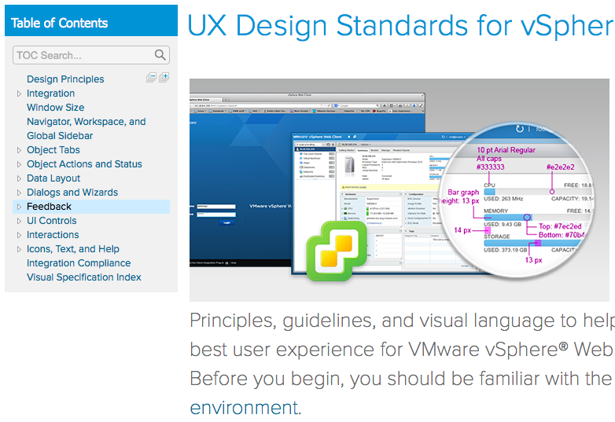

Visual.ly
I was an intern at Visual.ly shortly after its formation. I worked on design and development for Visual.ly Create, a platform that enabled non-developers to generate data visualizations.
User Research
My team and I surveyed and interviewed users in order to identify key pain points with current visualization tools, as well as generate high-level designs for Visual.ly Create.

Prototyping
I created prototypes of varying fidelity in order to

Big Data Extensions
I recently redesigned vSphere Big Data Extensions to better fit with VMware's UX Design Standards.
Note: My designs for this project are not yet public.